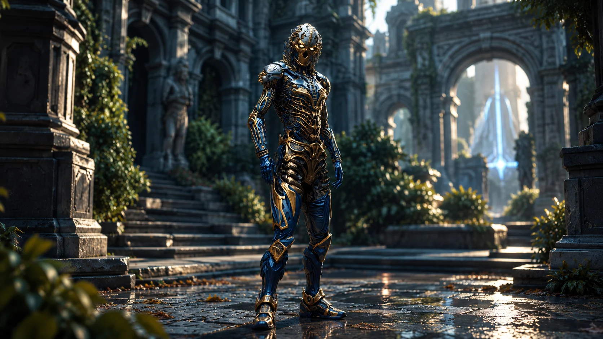
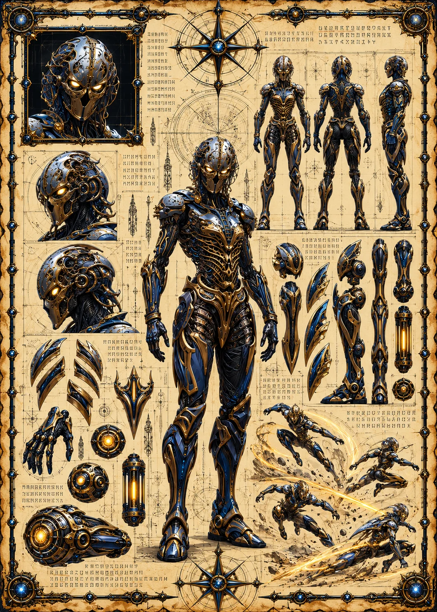

Field Observation
Drak activated a cluster of red alien orbs high on the left side. The orb array creates an elevated hostile observation post on Earth 1.
 ©
©
GENEZYS ARCHIVE · EARTH 1 · Synthbot
Field Avenger
Identity & combat record
Archive node 01 / 05
Archive record
Drak never leaves a crewmate behind, which makes Drak a rare thing among the Grim Corsairs. Phase Out strikes two enemies from beyond perception and helps an ally return to the fight sooner. The Corsairs mock Drak for it, but every crew wants Drak aboard.
Combat signature
Strikes beyond perception: Performs normal attack on 2 different enemies and reduces chosen ally's CD by 1.
Genezys 06:07 ™&©2026LEGIONS
Recovered visual record
Archive node 02 / 05

Full frame available // rotate device to landscape
Technical archive
Archive node 03 / 05

Classified field intelligence
Archive node 04 / 05
FIELD REPORT // HOSTILE ARRAY
Field Observation
Drak activated a cluster of red alien orbs high on the left side. The orb array creates an elevated hostile observation post on Earth 1.
Environment
Object Analysis
Key Findings
Motion archive
Archive node 05 / 05
Motion record not yet recovered